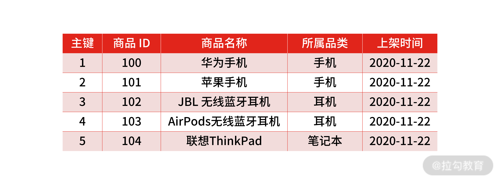

- 00 开篇词 中高级研发面试，逃不开架构设计这一环.md.html
- 01 研发工程师想提升面试竞争力，该具备这三个技术认知.md.html
- 02 研发工程师如何用架构师视角回答架构设计方案？.md.html
- 03 面试官如何考察与 CAP 有关的分布式理论？.md.html
- 04 亿级商品存储下，如何深度回答分布式系统的原理性问题？.md.html
- 05 海量并发场景下，如何回答分布式事务一致性问题？.md.html
- 06 分布式系统中，如何回答锁的实现原理？.md.html
- 07 RPC：如何在面试中展现出“造轮子”的能力？.md.html
- 08 MQ：如何回答消息队列的丢失、重复与积压问题.md.html
- 08 案例串联 如何让系统抗住双十一的预约抢购活动？.md.html
- 09 如何回答 MySQL 的索引原理与优化问题？.md.html
- 10 如何回答 MySQL 的事务隔离级别和锁的机制？.md.html
- 11 读多写少：MySQL 如何优化数据查询方案？.md.html
- 12 写多读少：MySQL 如何优化数据存储方案？.md.html
- 13 缓存原理：应对面试你要掌握 Redis 哪些原理？.md.html
- 14 缓存策略：面试中如何回答缓存穿透、雪崩等问题？.md.html
- 15 如何向面试官证明你做的系统是高可用的？.md.html
- 16 如何从架构师角度回答系统容错、降级等高可用问题？.md.html
- 17 如何向面试官证明你做的系统是高性能的？.md.html
- 18 如何从架构师角度回答怎么应对千万级流量的问题？.md.html
- 19 彩蛋 互联网架构设计面试，你需要掌握的知识体系.md.html
- 结束语 程序员的道、术、势.md.html
- 捐赠
12 写多读少：MySQL 如何优化数据存储方案？
上一讲，我带你学习了在高并发读多写少的场景下，数据库的一种优化方案：读写分离。通过主从复制的技术把数据复制多份，读操作只读取从数据库中的数据，这样就增强了抵抗大量并发读请求的能力，提升了数据库的查询性能。这时，你的系统架构如下：
系统架构图
案例背景
假设在这样的背景下，面试官出了一道考题：
公司现有业务不断发展，流量剧增，交易数量突破了千万订单，但是订单数据还是单表存储，主从分离后，虽然减少了缓解读请求的压力，但随着写入压力增加，数据库的查询和写入性能都在下降，这时你要怎么设计架构？
这个问题可以归纳为：数据库写入请求量过大，导致系统出现性能与可用性问题。
要想解决该问题，你可以对存储数据做分片，常见的方式就是对数据库做“分库分表”，在实现上有三种策略：垂直拆分、水平拆分、垂直水平拆分。所以一些候选人通常会直接给出这样的回答“可以分库分表，比如垂直拆分、水平拆分、垂直水平拆分”。
这么回答真的可以吗？
案例分析
我在面试候选人时发现，大部分研发工程师都能把分库分表策略熟练地回答出来，因为这个技术是常识，那你可能会问了：既然这个技术很普遍，大家都知道，面试官为什么还要问呢？
虽然分库分表技术方案很常见，但是在面试中回答好并不简单。因为面试官不会单纯浮于表面问你“分库分表的思路”，而是会站在业务场景中，当数据出现写多读少时，考察你做分库分表的整体设计方案和技术实现的落地思路。一般会涉及这样几个问题：
- 什么场景该分库？什么场景该分表？
- 复杂的业务如何选择分片策略？
- 如何解决分片后的数据查询问题？
案例解答
如何确定分库还是分表？
针对“如何确定分库还是分表？”的问题，你要结合具体的场景。
- 何时分表
当数据量过大造成事务执行缓慢时，就要考虑分表，因为减少每次查询数据总量是解决数据查询缓慢的主要原因。你可能会问：“查询可以通过主从分离或缓存来解决，为什么还要分表？”但这里的查询是指事务中的查询和更新操作。
- 何时分库
为了应对高并发，一个数据库实例撑不住，即单库的性能无法满足高并发的要求，就把并发请求分散到多个实例中去（这种应对高并发的思路我之前也说过）。
总的来说，分库分表使用的场景不一样： 分表是因为数据量比较大，导致事务执行缓慢；分库是因为单库的性能无法满足要求。
如何选择分片策略？
在明确分库分表的场景后，面试官一般会追问“怎么进行分片？”换句话说就是按照什么分片策略对数据库进行分片？
- 垂直拆分
垂直拆分是根据数据的业务相关性进行拆分。比如一个数据库里面既存在商品数据，又存在订单数据，那么垂直拆分可以把商品数据放到商品库，把订单数据放到订单库。一般情况，垂直拆库常伴随着系统架构上的调整。
垂直拆分
比如在对做系统“微服务”改造时，将原本一个单体系统拆分成多个子系统，每个系统提供单独的服务，那么随着应用层面的拆分带来的也有数据层面的拆分，将一个主库的数据表，拆分到多个独立的子库中去。
对数据库进行垂直拆分最常规，优缺点也很明显。
垂直拆分可以把不同的业务数据进行隔离，让系统和数据更为“纯粹”，更有助于架构上的扩展。但它依然不能解决某一个业务的数据大量膨胀的问题，一旦系统中的某一个业务库的数据量剧增，比如商品系统接入了一个大客户的供应链，对于商品数据的存储需求量暴增，在这个时候，就要把数据拆分到多个数据库和数据表中，也就是对数据做水平拆分。
- 水平拆分
垂直拆分随架构改造而拆分，关注点在于业务领域，而水平拆分指的是把单一库表数据按照规则拆分到多个数据库和多个数据表中，比如把单表 1 亿的数据按 Hash 取模拆分到 10 个相同结构的表中，每个表 1 千万的数据。并且拆分出来的表，可以分别存放到不同的物理数据库中，关注点在于数据扩展。
水平拆分
拆分的规则就是哈希分片和范围分片（这部分内容你可以参考 04 讲中的内容，我就不赘述了）。但我要强调一下 Range 分片，因为 04 讲中有些同学对 Range 分片解决数据热点的问题有些误解。
- Range（范围分片）
是按照某一个字段的区间来拆分，最好理解的就是按照时间字段分片，比如可以把一个月的数据放入一张表中，这样在查询时就可以根据时间先定位数据存储在哪个表里面，再按照查询条件来查询。
但是按时间字段进行范围分片的场景并不多，因为会导致数据分布不均，毕竟不是每个月的销量都是平均的。所以常见的 Range 分片是按照字段类型，比如按照商品的所属品类进行分片。这样与 Hash 分片不同的是，Range 分片就可以加入对于业务的预估。

Range 分片
但是同样的，由于不同“商品品类”的业务热点不同，对于商品数据存储也会存在热点数据问题，这个时候处理的手段有两个。
1、垂直扩展
由于 Range 分片是按照业务特性进行的分片策略，所以可以对热点数据做垂直扩展，即提升单机处理能力。在业务发展突飞猛进的初期，建议使用“增强单机硬件性能”的方式提升系统处理能力，因为此阶段，公司的战略往往是发展业务抢时间，“增强单机硬件性能”是最快的方法。
2、分片元数据
单机性能总是有极限的，互联网分布式架构设计高并发终极解决方案还是水平扩展，所以结合业务的特性，就需要在 Range 的基础上引入“分片元数据”的概念：分片的规则记录在一张表里面，每次执行查询的时候，先去表里查一下要找的数据在哪个分片中。
这种方式的优点是灵活性高，并且分片规则可以随着业务发展随意改动。比如当某个分片已经是热点了，那就可以把这个分片再拆成几个分片，或者把这个分片的数据移到其他分片中去，然后修改一下分片元数据表，就可以在线完成数据的再分片了。
分片元数据
但你要注意，分片元数据本身需要做高可用（面试考察点可以参考 04 讲中的内容）。方案缺点是实现起来复杂，需要二次查询，需要保证分片元数据服务的高可用。不过分片元数据表可以通过缓存进行提速。
- 垂直水平拆分
垂直水平拆分，是综合垂直和水平拆分方式的一种混合方式，垂直拆分把不同类型的数据存储到不同库中，再结合水平拆分，使单表数据量保持在合理范围内，提升性能。
垂直水平拆分
如何解决数据查询问题？
分库分表引入的另外一个问题就是数据查询的问题（比较常见），比如面试官会问类似的问题：
在未分库分表之前，我们查询数据总数时，可以直接通过 SQL 的 count() 命令，现在数据分片到多个库表中，如何解决呢？
解题思路很多，你可以考虑其他的存储方案，比如聚合查询使用频繁时，可以将聚合查询的数据同步到 ES 中，或者将计数的数据单独存储在一张表里。如果是每日定时生成的统计类报表数据，也可以将数据同步到 HDFS 中，然后用一些大数据技术来生成报表。
技术认知
不夸张地说，MySQL 是每个后端开发人员都要精通的数据库，因为其开源、轻量级，且有着金融级别的事务保证，所以一直是互联网项目的标配。
但是随着近些年技术的发展，下一代存储技术上出现了 NewSQL ，我觉得未来它可能会取代 MySQL ：
NewSQL 是新一代的分布式数据库，不但具备分布式存储系统的高性能、高可用，弹性扩容等能力，还兼容传统关系型数据库的 SQL 标准。并且，还提供了和传统关系型数据库不相上下的事务保证，是具备了支撑未来交易类业务能力的。
为了能体现你个人的技术视野，我希望你在面试的过程中，也谈一些与存储这个技术领域有关的内容，比如 NewSQL 的发展和相关开源产品，如 CockroachDB、TiDB。你可以在面试前熟悉一下 NewSQL 数据库的原理，然后以其和现有关系型的区别为切入点，和面试官讨论即可。
总结
总的来说，在面对数据库容量瓶颈和写请求并发量大时，你可以选择垂直分片和水平分片：垂直分片一般随着业务架构拆分来进行；水平分片通常按照 Hash（哈希分片）取模和 Range（范围分片）进行，并且，通常的形态是垂直拆分伴随着水平拆分，即先按照业务垂直拆分后，再根据数据量的多少决定水平分片。
Hash 分片在互联网中应用最为广泛，简单易实现，可以保证数据非常均匀地分布到多个分片，但其过滤掉了业务属性，不能根据业务特性进行调整。而 Range 分片却能预估业务，更高效地扫描数据记录（Hash 分片由于数据被打散，扫描操作的 I/O 开销更大）。除了 Hash 分片和 Range 分片，更为灵活的方式是基于分片元数据。
不过你要注意，这几种方式也会引入诸如聚合查询的问题，要想解决聚合查询，你可以让聚合查询记录存储在其他存储设备中（比如 ES、HDFS）。
最后，除了中规中矩地回答面试官提出的问题，我也希望你能展示自己的技术视野，选择 NewSQL 作为切入点。
© 2019 - 2023 Liangliang Lee. Powered by gin and hexo-theme-book.